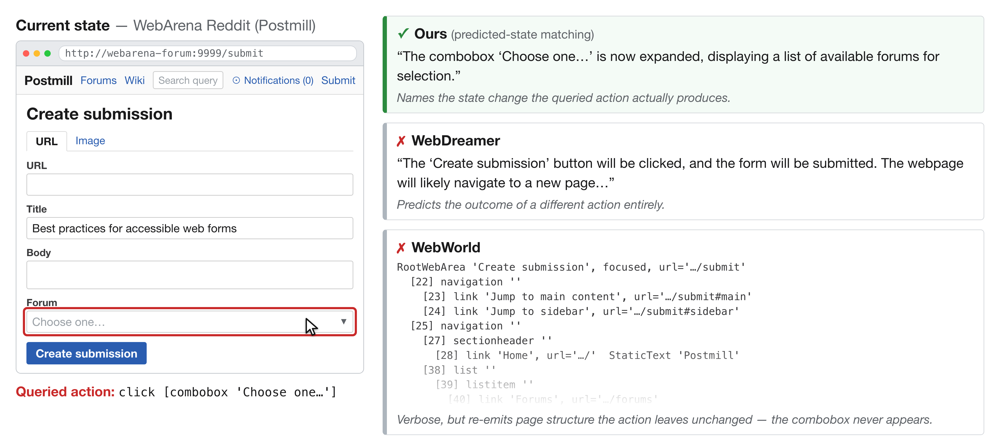
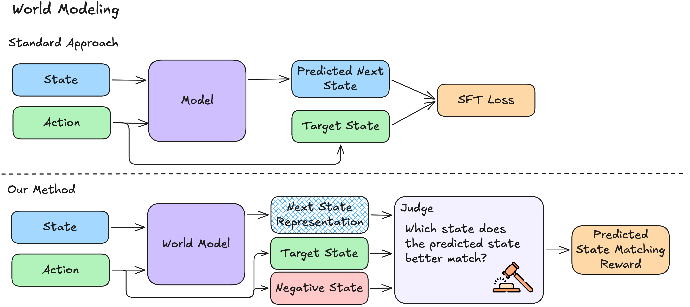
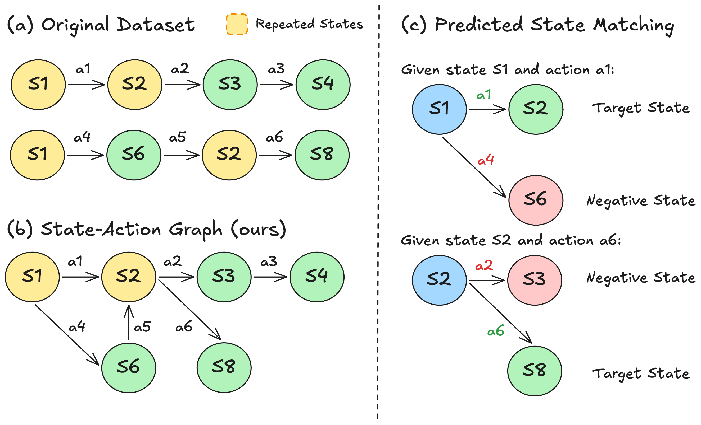
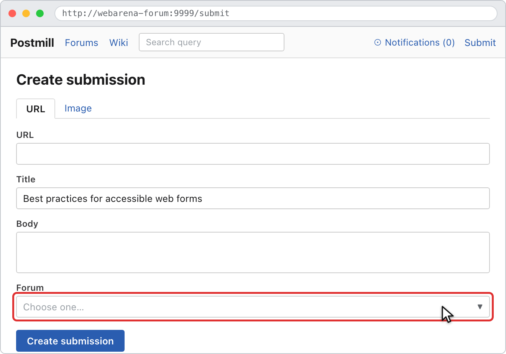
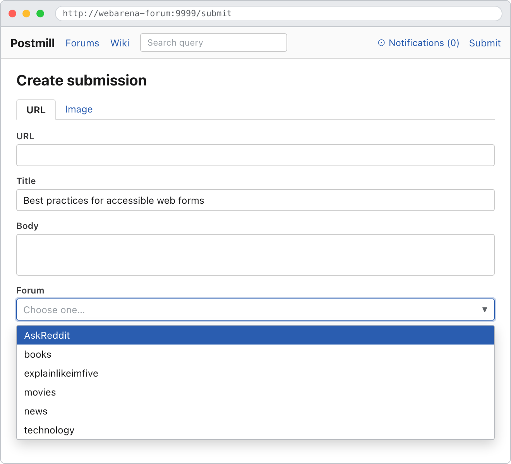

Branch the data
Merge repeated browser states across Go-Browse trajectories into a graph with multiple executable actions and observed outcomes.
Web agents · World models · 2026
UC Berkeley · MIT-IBM Watson AI Lab · Cal Poly San Luis Obispo · Xero
* Equal contribution
World models should predict what helps an agent choose—not simply what is easiest to reconstruct.

Recent web agents use world models for test-time action selection by sampling candidate actions, predicting the resulting web states, and ranking them with a ranker model or a Process Reward Model (PRM). These world models are typically trained via supervised next-state prediction to generate fixed representations like HTML or AXTree snapshots. However, this objective is misaligned with the downstream ranker, which relies on predicted states being discriminative across candidates to accurately score them. To address this, we introduce predicted-state matching, a training objective where the predicted representation must distinguish the true resulting state from those reached by alternative actions. We train these models using a branching web-agent dataset derived from WebArena Go-Browse trajectories, where every decision point contains multiple alternative actions and their resulting states. Experiments on our held-out predicted-state-matching benchmark show that our approach outperforms world models trained with supervised next-state prediction. We further show that our approach improves PRM-style action ranking on WebPRMBench compared with action-only PRMs and PRMs augmented with supervised-next-state world models. Finally, on WebArena-Lite, using our world model for test-time action selection improves end-to-end task success.
Standard world models learn to imitate a fixed state format. Predicted-state matching instead rewards a representation when it makes the queried action’s true outcome distinguishable from alternative outcomes.

Merge repeated browser states across Go-Browse trajectories into a graph with multiple executable actions and observed outcomes.
Given the task, history, current accessibility tree, and queried action, the world model generates a flexible textual state representation.
A judge must match the representation to the true next state over an alternative state reached by a competing action.
Linear trajectories hide the counterfactuals an agent needs for local decision making. Our state-action graph exposes them: 7,730 branching decision points from 2,839 trajectories yield 30,920 pairwise examples.

Predicted-state matching improves both the intrinsic quality of world-model representations and the downstream decisions made from them.
Our Qwen3-8B model achieves the strongest overall matching accuracy, outperforming existing web world models and the data-matched supervised full-AXTree baseline.
| Model | Shopping | CMS | GitLab | Map | Overall | |
|---|---|---|---|---|---|---|
| General language models | ||||||
| GPT-4o | 44.44 | 47.80 | 48.22 | 47.00 | 55.81 | 49.40 |
| GPT-4o-mini | 48.15 | 46.70 | 47.72 | 47.00 | 53.49 | 48.80 |
| Qwen3-4B | 59.26 | 54.95 | 52.79 | 52.00 | 53.95 | 53.94 |
| Qwen3-8B | 67.90 | 55.50 | 68.00 | 56.50 | 68.30 | 62.86 |
| Existing world models | ||||||
| WebDreamer-7B | 72.80 | 70.80 | 75.63 | 75.00 | 76.70 | 74.51 |
| WebWorld-8B | 79.01 | 67.58 | 77.66 | 54.00 | 77.21 | 70.17 |
| Data-matched SFT baseline | ||||||
| Full AXTree target | 45.68 | 46.15 | 47.72 | 46.00 | 51.63 | 47.77 |
| Predicted-state matching Ours | 77.78 | 77.47 | 79.70 | 82.50 | 84.19 | 80.80 |
Under the same Qwen2.5-7B reward-model backbone and answer-only SFT setup, our state representations improve the controlled Best-of-N average by 16.90 points over direct action ranking.
| Model | Mind2Web | WebArena | AssistantBench | WorkArena | Average | |||||
|---|---|---|---|---|---|---|---|---|---|---|
| Pair | BoN | Pair | BoN | Pair | BoN | Pair | BoN | Pair | BoN | |
| Direct (no state) | 85.14 | 60.91 | 80.85 | 52.73 | 82.50 | 56.67 | 79.57 | 52.88 | 82.02 | 55.80 |
| + WebWorld-8B states | 89.74 | 73.20 | 84.32 | 65.60 | 86.66 | 67.41 | 81.21 | 64.32 | 85.48 | 67.63 |
| + State-matching states Ours | 96.71 | 89.39 | 88.56 | 69.15 | 88.33 | 70.00 | 83.84 | 62.26 | 89.36 | 72.70 |
Adding predicted state representations to Best-of-5 action selection more than doubles GPT-4o ReAct-style task success in the same evaluation harness.
When a combobox is clicked, our model names the exact consequence: the menu expands and displays available forums. Fixed-format or supervised baselines either predict the wrong action or repeat irrelevant page structure.


Takeaway
Optimize world models to preserve the action-relevant differences needed for downstream decisions—not to reproduce a predefined representation of the next state.
@article{li2026discriminative,
title = {Discriminative World Models for Web Agents},
author = {Li, Kelvin and Pendharkar, Dhruv and Pahilajani, Anish and
Shang, Chuyi and Oks, Leon and Karlinsky, Leonid and
Feris, Rogerio and Darrell, Trevor and Herzig, Roei},
year = {2026}
}